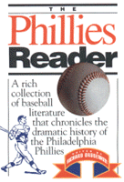

A rich collection of baseball literature that chronicles the dramatic history of the Philadelphia Phillies
A rich collection of baseball literature that chronicles the dramatic history of the Philadelphia Phillies


 A rich collection of baseball literature that chronicles the dramatic history of the Philadelphia Phillies
A rich collection of baseball literature that chronicles the dramatic history of the Philadelphia Phillies

|  |
The Phillies ReaderUpdated Editionedited by Richard Orodenkerpaper EAN: 978-1-59213-398-7 (ISBN: 1-59213-398-3) |
An anthology of some of the best writing about the up-and-down history of the Philadelphia Phillies, this updated paperback edition features several new essays—including one about Citizens Bank Park—and the team's recent history. The stories herein provide fans with some of the best sportswriting about the woes and triumphs of Phillies baseball.
The Phillies Reader features essays on the athletic achievements of such legendary players as Chuck Klein, Richie Ashburn, Dick Allen, and Mike Schmidt; the political turmoil surrounding the "ok" from manager Ben Chapman to "ride" Jackie Robinson about the color of his skin; the bizarre shooting of Eddie Waitkus; the heroics of the Whiz Kids; the heartbreak of '64; and the occasional triumphs and frequent travails of controversial managers Gene Mauch, Frank Lucchesi, and Danny Ozark. It asks why fans boo great players such as Del Ennis, but forgave Pat Burrell for his horrendous 2003 slump.
Featuring essays by Red Smith, Pete Dexter, Roger Angell, and James Michener, among others, The Phillies Reader presents a compendium of Phillies literature that reveals what it is that makes legends.
Excerpt available at www.temple.edu/tempress
"Orodenker has assembled some great material from truly superb writers.... The writing is so good that even those who detest the Phillies but love baseball will appreciate the 46 essays collected here."
—Philadelphia Style
"If you are a genuine Phillies fan, once you pick [The Phillies Reader] up, you won't put it down until you've read it cover to cover."
—The Philadelphia Public Record
Praise for the First Edition:
"If you like baseball and good writing, chances are you'll find The Phillies Reader a good read, indeed."
—The Philadelphia Inquirer
Introduction
Part I: Early Years
1. Delahanty Hits Four Home Runs – The Chicago Tribune
2. "Young Cy" vs. The Phillies – Charles Dryden
3. How I Lost the 1915 World Series – Grover Cleveland Alexander
4. When Casey Was a Phillie – Robert W. Creamer
Part II: Futile Phils
5. The Pitchless Wonders – Jack Orr
6. Klein Hits Four Home Runs – The Philadelphia Inquirer
7. The Doormats of the Loop – Al Horwits
8. Nugent Show Them, Instead – Red Smith
Part III: Phillies in Black and White
9. The All-Black Phillies? – Bill Veeck as told to Ed Linn
10. "We Doan Need No Niggers Here" – Roger Kahn
11. "Phillies Warned On 'Riding' Jackie" – Wendell Smith
12. Major League "Dozens" Playing – Dan Burley
13. Johnny Kennedy – Claude E. Harrison, Jr
Part IV: Whiz Kids
14. Eddie Waitkus – Ira Berkow
15. The Whiz Kids Come of Age – Bob Stevens
16. Game Two, 1950 – Joe Williams
17. First Robin of Fling (Robin Roberts) – Edgar Williams
18. The Nebraska Comet (Richie Ashburn) – Mike Gaven
19. Baseball Eye – John Lardner
20. The Tragedy of the Phillies – Ed Linn
Part V: The Mauch Years
21. The Many Moods of Mauch – Furman Bisher
22. The Dalton Gang Rides Again – Walter Bingham
23. One in a Row – Sandy Grady
24. What It Feels Like to Lose 23 in a Row – Si Burick
25. Something Special (Dick Allen) – Larry Murchant
26. Daddy's Day Pitcher (Jim Bunning) – Ray Robinson
27. A Week with the Phillies – Arnold Hano
28. Out with a Whimper – Sandy Grady
29. The Survivors of '64: Johnny Callison – Stan Hochman
30. Uecker's (Next-to) Last Hurrah – Bob Uecker and Mickey Herskovitz
Part VI: The Lucchesi Interlude
31. Thoroughly Modern Phillies – Roy Blount, Jr.
32. The Quality of Mercy Is Not Strained – Tom Cushman
33. The Axman Cometh (Frank Lucchesi) – Frank Dolson
Part VII: The Ozark Era
34. Mike Schmidt Hits Four Home Runs – Allen Lewis
35. A Flag for Betsy Ross's Town – Red Smith
36. The Ten Minute Collapse – Bill Conlin
37. Life and Death through the Years with the Phillies – James A. Michener
38. Body and Soul (Mike Schmidt) – Tony Kornheiser
39. Thin Mountain Air (Steve Carlton) – Pat Jordan
40. The Wizard of Oze, through the Years (Danny Ozark) – Ted Silary
Part VIII: Championship Seasons
41. 1980: It Wasn't Pretty but It Sure Was Fun – Thomas Boswell
42. What Money Hath (and Hathn't) Wrought – Wilfrid Sheed
43. Bah, Humbug! – Pete Dexter
44. The Metroliner Series – Roger Angell
45. Long-Haired Aliens Cross the Border – George Vecsey
46. Game Four—When Four Hours, 14 Minutes and 14 Runs Weren't Enough – Bruce Bushel
Richard Orodenker teaches American Studies and English at Penn State Abington and Community College of Philadelphia. He is author of The Writers' Game: Baseball Writing in America, Twentieth-Century American Sportswriters, and American Sportswriters and Writers on Sports.
Contributors: Charles Dryden, Grover Cleveland Alexander, Robert W. Creamer, Jack Orr, Al Horwits, Red Smith, Bill Veeck, Ed Linn, Roger Kahn, Wendell Smith, Dan Burley, Claude E. Harrison, Jr., Ira Berkow, Bob Stevens, Joe Williams, Edgar Williams, Mike Gaven, John Lardner, Ed Linn, Furman Bisher, Walter Bingham, Si Burick, Larry Merchant, Ray Robinson, Arnold Hano, Sandy Grady, Stan Hochman, Bob Uecker, Mickey Herskovitz, Roy Blount, Fr., Tom Cushman, Frank Dolson, Allen Lewis, Bill Conlin, James A. Michener, Tony Kornheiser, Pat Jordan, Ted Silary, Thomas Boswell, Wilfrid Sheed, Pete Dexter, Roger Angell, George Vecsey, Bruce Bushel.
© 2015 Temple University. All Rights Reserved. This page: http://www.temple.edu/tempress/titles/1259_reg.html.